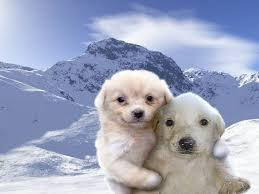

¿Qué es el arte?
El arte es una expresión de la creatividad de los seres humanos, que se manifiesta en obras que pueden ser apreciadas por los sentidos. Durante siglos, artistas, filósofos y críticos han ofrecido diversas definiciones.

Características del Arte Moderno
- Rechazo de lo tradicional: Se aleja del realismo y la representación fiel de la realidad.
- Exploración de nuevas técnicas: Uso de colores intensos, formas abstractas y técnicas innovadoras.
- Expresión personal: Se enfoca en la subjetividad y la emoción del artista.
- Movimientos clave: Impresionismo, expresionismo, cubismo, surrealismo, futurismo, dadaísmo, entre otros.
Otro Tema del Arte